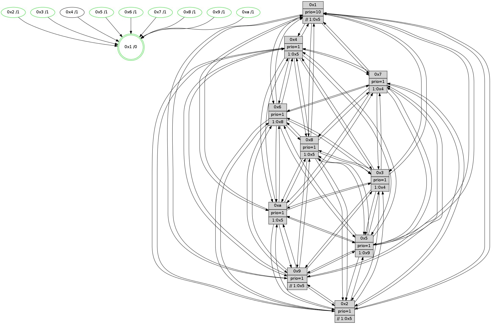

>> << IDX [start] -100 -25 -5 +0 +5 +25 +100 [795.652752161]
 Previous packets
----------------------------------------------------------------------
790.135835 beacon01(faad) #0 coord=01,02,03,04,05,06,07,0a,09,08 cycle=688.0ms assoc
-- color-indic=1 64 5a 6a
790.145817 beacon02(faad) #0 coord=01,02,03,04,05,06,07,0a,09,08 cycle=688.0ms assoc 64 c9 5b
790.155817 beacon03(faad) #0 coord=01,02,03,04,05,06,07,0a,09,08 cycle=688.0ms assoc 64 b3 16
790.165818 beacon04(faad) #0 coord=01,02,03,04,05,06,07,0a,09,08 cycle=688.0ms assoc 64 c4 fc
790.175819 beacon05(faad) #0 coord=01,02,03,04,05,06,07,0a,09,08 cycle=688.0ms assoc 64 be b1
790.185819 beacon06(faad) #0 coord=01,02,03,04,05,06,07,0a,09,08 cycle=688.0ms assoc 64 30 66
790.195818 beacon07(faad) #0 coord=01,02,03,04,05,06,07,0a,09,08 cycle=688.0ms assoc 64 4a 2b
790.205823 beacon0a(faad) #0 coord=01,02,03,04,05,06,07,0a,09,08 cycle=688.0ms assoc 64 3b 20
790.215823 beacon09(faad) #0 coord=01,02,03,04,05,06,07,0a,09,08 cycle=688.0ms assoc 64 b5 f7
790.225823 beacon08(faad) #0 coord=01,02,03,04,05,06,07,0a,09,08 cycle=688.0ms assoc 64 cf ba
790.237395 [STC(4)->1 #0.85 to-color d=1]
790.241168 [STC(7)->1 #0.85 tree-change,inconsistent-stability,stable,to-color d=1]
790.242938 [Hello(5): seq=506 sym=7,6,4,3,1,9,8,10,2 sysInfo=hasWarning stat=7:12,15,1,6/6:7,15,0,7/4:7,8,4,5/3:9,8,6,7/1:3,11,6,1/9:0,13,10,0/8:3,5,7,5/10:8,12,6,1/2:0,1,0,0]
790.245828 [Color(7) seq=125 @0:0 prio=1 >1.@4,1.@5,1.@6,1.@8]
790.247492 [Hello(3): seq=506 sym=1,7,6,2,4,8,9,10,5 sysInfo= stat=1:11,15,9,0/7:8,8,11,4/6:5,7,6,8/2:8,9,10,8/4:0,2,7,5/8:1,8,9,3/9:7,0,14,7/10:9,11,12,7/5:2,8,9,8]
790.253860 [STC(6)->1 #0.85 tree-change,inconsistent-stability,stable,to-color d=1]
790.256087 [STC(10)->1 #0.85 tree-change,inconsistent-stability,stable,to-color d=1]
790.259219 [Hello(2): seq=502 sym=4,5,7,6,3,9,8,10,1 sysInfo=hasWarning stat=4:15,3,9,4/5:1,13,7,2/7:11,12,1,6/6:3,1,15,6/3:4,14,7,4/9:8,13,8,0/8:7,9,7,5/10:0,15,9,6/1:3,7,1,1]
790.263722 [STC(3)->1 #0.85 tree-change,inconsistent-stability,stable,to-color d=1]
790.265718 [Color(5) seq=159 @0:0 prio=1 >1.@9,1.@a]
790.268570 [STC(2)->1 #0.85 tree-change,inconsistent-stability,stable,to-color d=1]
790.272452 [Color(2) seq=151 @0:0 prio=1 >>1.@5,1.@6,1.@7]
----------------------------------------------------------------------
790.923965 beacon01(faad) #0 coord=01,02,03,04,05,06,07,0a,09,08 cycle=688.0ms assoc
-- color-indic=1 64 e6 6f
790.933948 beacon02(faad) #0 coord=01,02,03,04,05,06,07,0a,09,08 cycle=688.0ms assoc 64 75 5e
790.943947 beacon03(faad) #0 coord=01,02,03,04,05,06,07,0a,09,08 cycle=688.0ms assoc 64 0f 13
790.953946 beacon04(faad) #0 coord=01,02,03,04,05,06,07,0a,09,08 cycle=688.0ms assoc 64 78 f9
790.963947 beacon05(faad) #0 coord=01,02,03,04,05,06,07,0a,09,08 cycle=688.0ms assoc 64 02 b4
790.973947 beacon06(faad) #0 coord=01,02,03,04,05,06,07,0a,09,08 cycle=688.0ms assoc 64 8c 63
790.983948 beacon07(faad) #0 coord=01,02,03,04,05,06,07,0a,09,08 cycle=688.0ms assoc 64 f6 2e
790.993953 beacon0a(faad) #0 coord=01,02,03,04,05,06,07,0a,09,08 cycle=688.0ms assoc 64 87 25
791.003953 beacon09(faad) #0 coord=01,02,03,04,05,06,07,0a,09,08 cycle=688.0ms assoc 64 09 f2
791.013954 beacon08(faad) #0 coord=01,02,03,04,05,06,07,0a,09,08 cycle=688.0ms assoc 64 73 bf
791.026084 [Hello(4): seq=506 sym=5,7,6,2,3,9,8,10,1 sysInfo= stat=5:6,3,11,8/7:1,11,15,3/6:1,6,15,8/2:5,3,9,8/3:5,10,8,5/9:4,9,12,3/8:7,13,12,8/10:15,11,1,7/1:10,15,6,1]
791.028814 [Hello(7): seq=506 sym=2,3,5,6,4,8,9,10,1 sysInfo=hasWarning stat=2:9,13,3,10/3:11,5,1,9/5:7,15,2,13/6:3,1,2,3/4:2,0,0,0/8:5,12,0,5/9:3,7,0,9/10:11,10,3,8/1:1,0,6,0]
791.032147 [Hello(10): seq=439 sym=6,2,3,8,9,5,7,4,1 sysInfo=hasWarning stat=6:6,8,15,3/2:14,9,7,2/3:6,1,6,6/8:9,12,9,7/9:1,3,0,0/5:2,12,12,10/7:15,8,13,4/4:2,11,5,6/1:14,1,7,1]
791.035017 [Hello(9): seq=450 sym=2,5,3,4,7,6,8,10,1 sysInfo=hasWarning stat=2:7,1,6,0/5:9,13,8,1/3:9,9,8,9/4:9,7,10,5/7:10,10,2,6/6:11,15,12,6/8:15,7,3,0/10:8,0,4,0/1:9,12,6,1]
791.038816 [Color(9) seq=155 @0:0 prio=1 >>1.@5,1.@6,1.@7]
791.040766 [Color(6) seq=160 @0:0 prio=1 >1.@8,1.@9,1.@a]
791.042610 [Color(10) seq=138 @0:0 prio=1 >1.@5,1.@8,1.@9]
791.045849 [Color(1) seq=187 @0:0 prio=10 >>1.@5,1.@6,1.@7]
791.048543 [Color(3) seq=147 @0:0 prio=1 >1.@4,1.@5,1.@6,1.@7]
791.055043 [Hello(8): seq=450 sym=5,2,3,4,7,6,9,10,1 sysInfo=hasWarning stat=5:15,14,0,9/2:7,7,7,2/3:12,0,13,9/4:10,8,13,6/7:10,5,0,8/6:13,8,11,8/9:9,4,13,6/10:3,5,2,0/1:3,14,3,0]
791.060101 [Color(8) seq=173 @0:0 prio=1 >1.@5,1.@9,1.@a]
----------------------------------------------------------------------
791.712096 beacon01(faad) #0 coord=01,02,03,04,05,06,07,0a,09,08 cycle=688.0ms assoc
-- color-indic=1 64 22 61
791.722079 beacon02(faad) #0 coord=01,02,03,04,05,06,07,0a,09,08 cycle=688.0ms assoc 64 b1 50
791.732079 beacon03(faad) #0 coord=01,02,03,04,05,06,07,0a,09,08 cycle=688.0ms assoc 64 cb 1d
791.742081 beacon04(faad) #0 coord=01,02,03,04,05,06,07,0a,09,08 cycle=688.0ms assoc 64 bc f7
791.752079 beacon05(faad) #0 coord=01,02,03,04,05,06,07,0a,09,08 cycle=688.0ms assoc 64 c6 ba
791.762079 beacon06(faad) #0 coord=01,02,03,04,05,06,07,0a,09,08 cycle=688.0ms assoc 64 48 6d
791.772080 beacon07(faad) #0 coord=01,02,03,04,05,06,07,0a,09,08 cycle=688.0ms assoc 64 32 20
791.782083 beacon0a(faad) #0 coord=01,02,03,04,05,06,07,0a,09,08 cycle=688.0ms assoc 64 43 2b
791.792084 beacon09(faad) #0 coord=01,02,03,04,05,06,07,0a,09,08 cycle=688.0ms assoc 64 cd fc
791.802086 beacon08(faad) #0 coord=01,02,03,04,05,06,07,0a,09,08 cycle=688.0ms assoc 64 b7 b1
791.813304 [Hello(3): seq=507 sym=1,7,6,2,4,8,9,10,5 sysInfo= stat=1:11,15,9,0/7:8,8,11,4/6:5,7,6,8/2:8,10,11,8/4:1,2,7,5/8:2,9,9,3/9:7,0,14,7/10:9,11,12,7/5:2,9,9,8]
791.817777 [Hello(1): seq=416 sym=4,2,9,5,10,3,8,6,7 sysInfo=coloring-mode-on,ColoringModeRequestCalled stat=4:14,5,15,0/2:12,0,7,9/9:12,4,12,1/5:13,14,15,2/10:5,1,5,8/3:9,6,4,0/8:3,2,6,7/6:12,11,6,7/7:1,6,12,10]
791.820438 [Hello(6): seq=507 sym=2,3,5,4,7,9,8,10,1 sysInfo= stat=2:0,0,5,7/3:1,14,13,7/5:12,11,14,10/4:9,7,10,0/7:3,8,11,2/9:2,4,0,0/8:8,14,12,6/10:11,6,3,7/1:1,14,2,1]
791.824811 [Hello(2): seq=503 sym=4,5,7,6,3,9,8,10,1 sysInfo=hasWarning stat=4:0,3,10,4/5:1,13,7,2/7:12,12,1,6/6:3,2,15,6/3:4,15,7,4/9:9,14,8,0/8:8,10,7,5/10:1,0,9,6/1:3,8,1,1]
791.828928 [Color(2) seq=152 @0:0 prio=1 >>1.@5,1.@6,1.@7]
791.835082 [Color(7) seq=126 @0:0 prio=1 >1.@4,1.@5,1.@6,1.@8]
791.836839 [Hello(5): seq=507 sym=7,6,4,3,1,9,8,10,2 sysInfo=hasWarning stat=7:13,15,1,6/6:7,0,0,7/4:8,8,5,5/3:9,9,6,7/1:3,12,6,1/9:1,14,10,0/8:4,6,7,5/10:9,13,6,1/2:0,2,1,0]
791.841266 [Color(5) seq=160 @0:0 prio=1 >1.@9,1.@a]
----------------------------------------------------------------------
792.500228 beacon01(faad) #0 coord=01,02,03,04,05,06,07,0a,09,08 cycle=688.0ms assoc
-- color-indic=1 64 9e 64
792.510211 beacon02(faad) #0 coord=01,02,03,04,05,06,07,0a,09,08 cycle=688.0ms assoc 64 0d 55
792.520211 beacon03(faad) #0 coord=01,02,03,04,05,06,07,0a,09,08 cycle=688.0ms assoc 64 77 18
792.530211 beacon04(faad) #0 coord=01,02,03,04,05,06,07,0a,09,08 cycle=688.0ms assoc 64 00 f2
792.540212 beacon05(faad) #0 coord=01,02,03,04,05,06,07,0a,09,08 cycle=688.0ms assoc 64 7a bf
792.550213 beacon06(faad) #0 coord=01,02,03,04,05,06,07,0a,09,08 cycle=688.0ms assoc 64 f4 68
792.560212 beacon07(faad) #0 coord=01,02,03,04,05,06,07,0a,09,08 cycle=688.0ms assoc 64 8e 25
792.570216 beacon0a(faad) #0 coord=01,02,03,04,05,06,07,0a,09,08 cycle=688.0ms assoc 64 ff 2e
792.580216 beacon09(faad) #0 coord=01,02,03,04,05,06,07,0a,09,08 cycle=688.0ms assoc 64 71 f9
792.590217 beacon08(faad) #0 coord=01,02,03,04,05,06,07,0a,09,08 cycle=688.0ms assoc 64 0b b4
792.601395 [Hello(4): seq=507 sym=5,7,6,2,3,9,8,10,1 sysInfo= stat=5:7,4,11,8/7:2,12,15,3/6:2,7,15,8/2:6,4,9,8/3:6,11,8,5/9:5,10,12,3/8:8,14,12,8/10:0,12,1,7/1:11,0,6,1]
792.604747 [Color(1) seq=188 @0:0 prio=10 >>1.@5,1.@6,1.@7]
792.606510 [Hello(10): seq=440 sym=6,2,3,8,9,5,7,4,1 sysInfo=hasWarning stat=6:7,8,15,3/2:15,10,7,2/3:7,2,6,6/8:10,13,9,7/9:1,3,0,0/5:3,13,12,10/7:15,9,13,4/4:3,11,5,6/1:15,2,7,1]
792.609846 [Hello(9): seq=451 sym=2,5,3,4,7,6,8,10,1 sysInfo=hasWarning stat=2:8,2,6,0/5:10,14,8,1/3:10,10,8,9/4:10,7,10,5/7:10,11,2,6/6:12,0,12,6/8:0,8,3,0/10:8,1,4,0/1:10,13,6,1]
792.613860 [Color(6) seq=161 @0:0 prio=1 >1.@8,1.@9,1.@a]
792.616052 [Hello(8): seq=451 sym=5,2,3,4,7,6,9,10,1 sysInfo=hasWarning stat=5:0,15,0,9/2:8,8,7,2/3:13,0,13,9/4:11,8,13,6/7:10,6,0,8/6:14,8,11,8/9:9,4,13,6/10:3,5,2,0/1:4,14,3,0]
792.619124 [Hello(7): seq=507 sym=2,3,5,6,4,8,9,10,1 sysInfo=hasWarning stat=2:9,13,3,10/3:12,6,1,9/5:8,0,2,13/6:3,2,2,3/4:2,0,0,0/8:6,13,0,5/9:4,8,0,9/10:12,11,3,8/1:1,1,6,0]
792.622735 [Color(10) seq=139 @0:0 prio=1 >1.@5,1.@8,1.@9]
792.624576 [Color(8) seq=174 @0:0 prio=1 >1.@5,1.@9,1.@a]
792.629117 [Color(3) seq=148 @0:0 prio=1 >1.@4,1.@5,1.@6,1.@7]
792.633560 [Color(9) seq=156 @0:0 prio=1 >>1.@5,1.@6,1.@7]
----------------------------------------------------------------------
793.288360 beacon01(faad) #0 coord=01,02,03,04,05,06,07,0a,09,08 cycle=688.0ms assoc
-- color-indic=1 64 0a bd
793.298342 beacon02(faad) #0 coord=01,02,03,04,05,06,07,0a,09,08 cycle=688.0ms assoc 64 99 8c
793.308341 beacon03(faad) #0 coord=01,02,03,04,05,06,07,0a,09,08 cycle=688.0ms assoc 64 e3 c1
793.318342 beacon04(faad) #0 coord=01,02,03,04,05,06,07,0a,09,08 cycle=688.0ms assoc 64 94 2b
793.328343 beacon05(faad) #0 coord=01,02,03,04,05,06,07,0a,09,08 cycle=688.0ms assoc 64 ee 66
793.338343 beacon06(faad) #0 coord=01,02,03,04,05,06,07,0a,09,08 cycle=688.0ms assoc 64 60 b1
793.348343 beacon07(faad) #0 coord=01,02,03,04,05,06,07,0a,09,08 cycle=688.0ms assoc 64 1a fc
793.358348 beacon0a(faad) #0 coord=01,02,03,04,05,06,07,0a,09,08 cycle=688.0ms assoc 64 6b f7
793.368349 beacon09(faad) #0 coord=01,02,03,04,05,06,07,0a,09,08 cycle=688.0ms assoc 64 e5 20
793.378348 beacon08(faad) #0 coord=01,02,03,04,05,06,07,0a,09,08 cycle=688.0ms assoc 64 9f 6d
793.390537 [Hello(3): seq=508 sym=1,7,6,2,4,8,9,10,5 sysInfo= stat=1:12,15,9,0/7:8,9,11,4/6:6,7,6,8/2:9,11,11,8/4:2,2,7,5/8:2,9,9,3/9:7,1,14,7/10:9,11,12,7/5:3,10,9,8]
793.393846 [Hello(6): seq=508 sym=2,3,5,4,7,9,8,10,1 sysInfo= stat=2:1,1,5,7/3:1,15,13,7/5:13,12,14,10/4:10,7,10,0/7:4,9,11,2/9:2,5,0,0/8:9,15,12,6/10:11,7,3,7/1:1,14,2,1]
793.398287 [Hello(5): seq=508 sym=7,6,4,3,1,9,8,10,2 sysInfo=hasWarning stat=7:14,15,1,6/6:7,1,0,7/4:9,8,5,5/3:10,10,6,7/1:3,13,6,1/9:2,15,10,0/8:5,7,7,5/10:10,14,6,1/2:0,2,1,0]
793.402078 [Color(5) seq=161 @0:0 prio=1 >1.@9,1.@a]
793.403778 [Hello(2): seq=504 sym=4,5,7,6,3,9,8,10,1 sysInfo=hasWarning stat=4:1,3,10,4/5:2,14,7,2/7:13,13,1,6/6:3,3,15,6/3:5,0,7,4/9:10,15,8,0/8:9,11,7,5/10:2,1,9,6/1:3,9,1,1]
793.406647 [Hello(1): seq=417 sym=4,2,9,5,10,3,8,6,7 sysInfo=coloring-mode-on,ColoringModeRequestCalled stat=4:15,5,15,0/2:13,1,7,9/9:13,5,12,1/5:14,15,15,2/10:6,2,5,8/3:9,7,4,0/8:4,3,6,7/6:13,12,6,7/7:2,7,12,10]
793.410405 [STC(1) #0.86 tree-change,inconsistent-stability,stable,to-color d=0]
793.414463 [Color(7) seq=127 @0:0 prio=1 >1.@4,1.@5,1.@6,1.@8]
793.418067 [Color(2) seq=153 @0:0 prio=1 >>1.@5,1.@6,1.@7]
----------------------------------------------------------------------
794.076492 beacon01(faad) #0 coord=01,02,03,04,05,06,07,0a,09,08 cycle=688.0ms assoc
-- color-indic=1 64 b6 b8
794.086475 beacon02(faad) #0 coord=01,02,03,04,05,06,07,0a,09,08 cycle=688.0ms assoc 64 25 89
794.096475 beacon03(faad) #0 coord=01,02,03,04,05,06,07,0a,09,08 cycle=688.0ms assoc 64 5f c4
794.106475 beacon04(faad) #0 coord=01,02,03,04,05,06,07,0a,09,08 cycle=688.0ms assoc 64 28 2e
794.116475 beacon05(faad) #0 coord=01,02,03,04,05,06,07,0a,09,08 cycle=688.0ms assoc 64 52 63
794.126476 beacon06(faad) #0 coord=01,02,03,04,05,06,07,0a,09,08 cycle=688.0ms assoc 64 dc b4
794.136476 beacon07(faad) #0 coord=01,02,03,04,05,06,07,0a,09,08 cycle=688.0ms assoc 64 a6 f9
794.146481 beacon0a(faad) #0 coord=01,02,03,04,05,06,07,0a,09,08 cycle=688.0ms assoc 64 d7 f2
794.156482 beacon09(faad) #0 coord=01,02,03,04,05,06,07,0a,09,08 cycle=688.0ms assoc 64 59 25
794.166482 beacon08(faad) #0 coord=01,02,03,04,05,06,07,0a,09,08 cycle=688.0ms assoc 64 23 68
794.177700 [Hello(7): seq=508 sym=2,3,5,6,4,8,9,10,1 sysInfo=hasWarning stat=2:9,14,3,10/3:13,7,1,9/5:8,0,2,13/6:3,2,2,3/4:2,0,0,0/8:6,14,0,5/9:4,9,0,9/10:12,12,3,8/1:1,1,6,0]
794.181289 [Color(1) seq=189 @0:0 prio=10 >>1.@5,1.@6,1.@7]
794.186194 [STC(9)->1 #0.86 tree-change,inconsistent-stability,stable,to-color d=1]
794.187796 [Hello(10): seq=441 sym=6,2,3,8,9,5,7,4,1 sysInfo=hasWarning stat=6:8,8,15,3/2:0,11,7,2/3:8,3,6,6/8:10,14,9,7/9:1,4,0,0/5:4,14,12,10/7:15,10,13,4/4:4,11,5,6/1:0,3,8,1]
794.190321 [Color(6) seq=162 @0:0 prio=1 >1.@8,1.@9,1.@a]
794.192523 [STC(10)->1 #0.86 tree-change,inconsistent-stability,stable,to-color d=1]
794.195579 [Color(10) seq=140 @0:0 prio=1 >1.@5,1.@8,1.@9]
794.197526 [STC(5)->1 #0.86 tree-change,inconsistent-stability,stable,to-color d=1]
794.199290 [Hello(8): seq=452 sym=5,2,3,4,7,6,9,10,1 sysInfo=hasWarning stat=5:1,0,0,9/2:9,9,7,2/3:14,1,13,9/4:12,8,13,6/7:10,7,0,8/6:15,8,11,8/9:9,5,13,6/10:3,5,2,0/1:5,15,4,0]
794.201847 [STC(3)->1 #0.86 tree-change,inconsistent-stability,stable,to-color d=1]
794.204434 [Color(3) seq=149 @0:0 prio=1 >1.@4,1.@5,1.@6,1.@7]
794.207046 [STC(8)->1 #0.86 tree-change,inconsistent-stability,stable,to-color d=1]
794.208378 [Color(9) seq=157 @0:0 prio=1 >>1.@5,1.@6,1.@7]
794.211360 [TreeStatus(8)-.->1 #0.86 tree-change,inconsistent-stability,stable child=1]
794.215126 [Color(8) seq=175 @0:0 prio=1 >1.@5,1.@9,1.@a]
----------------------------------------------------------------------
794.864623 beacon01(faad) #0 coord=01,02,03,04,05,06,07,0a,09,08 cycle=688.0ms assoc
-- color-indic=1 64 72 b6
794.874606 beacon02(faad) #0 coord=01,02,03,04,05,06,07,0a,09,08 cycle=688.0ms assoc 64 e1 87
794.884605 beacon03(faad) #0 coord=01,02,03,04,05,06,07,0a,09,08 cycle=688.0ms assoc 64 9b ca
794.894607 beacon04(faad) #0 coord=01,02,03,04,05,06,07,0a,09,08 cycle=688.0ms assoc 64 ec 20
794.904606 beacon05(faad) #0 coord=01,02,03,04,05,06,07,0a,09,08 cycle=688.0ms assoc 64 96 6d
794.914607 beacon06(faad) #0 coord=01,02,03,04,05,06,07,0a,09,08 cycle=688.0ms assoc 64 18 ba
794.924607 beacon07(faad) #0 coord=01,02,03,04,05,06,07,0a,09,08 cycle=688.0ms assoc 64 62 f7
794.934610 beacon0a(faad) #0 coord=01,02,03,04,05,06,07,0a,09,08 cycle=688.0ms assoc 64 13 fc
794.944611 beacon09(faad) #0 coord=01,02,03,04,05,06,07,0a,09,08 cycle=688.0ms assoc 64 9d 2b
794.954610 beacon08(faad) #0 coord=01,02,03,04,05,06,07,0a,09,08 cycle=688.0ms assoc 64 e7 66
794.965829 [Hello(6): seq=509 sym=2,3,5,4,7,9,8,10,1 sysInfo= stat=2:2,2,5,7/3:1,0,14,7/5:14,13,15,10/4:10,7,10,0/7:5,10,11,2/9:2,6,0,0/8:10,0,13,7/10:11,8,4,7/1:2,14,3,1]
794.969800 [Hello(3): seq=509 sym=1,7,6,2,4,8,9,10,5 sysInfo= stat=1:13,15,10,0/7:9,10,11,4/6:7,7,6,8/2:10,12,11,8/4:2,2,7,5/8:2,10,10,4/9:7,2,14,7/10:9,11,12,7/5:4,11,9,8]
794.972722 [Hello(2): seq=505 sym=4,5,7,6,3,9,8,10,1 sysInfo=hasWarning stat=4:1,3,10,4/5:2,14,8,2/7:14,13,1,6/6:3,4,15,6/3:6,1,8,4/9:10,0,9,0/8:10,12,8,6/10:3,1,9,6/1:3,10,1,1]
794.978985 [Color(5) seq=162 @0:0 prio=1 >1.@9,1.@a]
794.980754 [Color(7) seq=128 @0:0 prio=1 >1.@4,1.@5,1.@6,1.@8]
794.982563 [Hello(1): seq=418 sym=4,2,9,5,10,3,8,6,7 sysInfo=coloring-mode-on,ColoringModeRequestCalled stat=4:15,5,15,0/2:13,2,7,9/9:13,6,13,1/5:14,15,0,2/10:7,3,6,8/3:9,8,5,0/8:5,4,7,8/6:13,13,7,7/7:3,8,12,10]